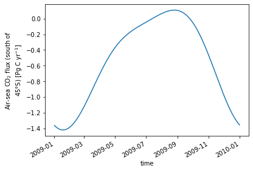

Flux estimates for each aircraft campaign
Flux estimates for each aircraft campaign¶
%load_ext autoreload
%autoreload 2
import cftime
import numpy as np
import xarray as xr
import emergent_constraint as ec
import util
clobber = False
clobber_deep = False
air_parms = ec.get_parameters('default')
obj_air = {};
acs = {}; scs = {};
for constraint_type in ['ocean_constraint',]:
model_input_lists = ec.get_model_tracer_lists(constraint_type)
obj_air[constraint_type] = ec.whole_enchilada(clobber=clobber_deep, **model_input_lists)
acs[constraint_type] = obj_air[constraint_type].get_ac(**air_parms, clobber=clobber)
ac = acs['ocean_constraint']
dfo = ac.gradient_summary[['vg_obs', 'vg_obs_std', 'vg_ext', 'vg_ext_std',]]
dfo = dfo.rename(
columns=dict(
vg_obs='Observed Vertical Gradient [ppm]',
vg_obs_std='Observed Gradient Uncertainty [ppm]',
vg_ext='Simulated Land+Fossil Gradient [ppm]',
vg_ext_std='Simulated Land+Fossil Gradient [ppm]',
)
)
# add columns for fluxes, flux errors, and start/end of 90-day windows?
dfo['Flux Date Start'] = [str(d[0]) for d in ac.campaign_flux.loc[dfo.index].flux_window_date_bound]
dfo['Flux Date End'] = [str(d[1]) for d in ac.campaign_flux.loc[dfo.index].flux_window_date_bound]
dfo['Flux Estimate [Pg C/yr]'] = ac.campaign_flux.loc[dfo.index].flux
dfo['Flux Uncertainty [Pg C/yr]'] = ac.campaign_flux.loc[dfo.index].flux_error
dfo
| Observed Vertical Gradient [ppm] | Observed Gradient Uncertainty [ppm] | Simulated Land+Fossil Gradient [ppm] | Simulated Land+Fossil Gradient [ppm] | Flux Date Start | Flux Date End | Flux Estimate [Pg C/yr] | Flux Uncertainty [Pg C/yr] | |
|---|---|---|---|---|---|---|---|---|
| campaign | ||||||||
| HIPPO-1 | -1.077490 | 0.465009 | -0.023900 | 0.120961 | 2008-10-26 | 2009-01-24 | -1.076390 | 0.639603 |
| HIPPO-2 | -0.162690 | 0.090161 | -0.046578 | 0.084528 | 2009-08-17 | 2009-11-15 | -0.167442 | 0.487200 |
| HIPPO-3 | -0.720060 | 0.204735 | -0.173505 | 0.026798 | 2010-01-09 | 2010-04-09 | -1.234981 | 0.957792 |
| HIPPO-5 | -0.315840 | 0.131419 | -0.306847 | 0.060584 | 2011-06-04 | 2011-09-02 | 0.098226 | 0.575171 |
| ORCAS-J | -1.185088 | 0.061978 | -0.070150 | 0.112105 | 2015-11-01 | 2016-01-30 | -1.135027 | 0.391570 |
| ORCAS-F | -1.500263 | 0.062165 | -0.075252 | 0.129962 | 2015-12-01 | 2016-02-29 | -1.431401 | 0.561137 |
| ATom-1 | -0.301487 | 0.110063 | -0.208775 | 0.058863 | 2016-05-17 | 2016-08-15 | -0.109408 | 0.493874 |
| ATom-2 | -1.556420 | 0.134834 | 0.010962 | 0.081646 | 2016-11-15 | 2017-02-13 | -1.567484 | 0.646107 |
| ATom-3 | -0.104060 | 0.131003 | -0.156930 | 0.112341 | 2017-07-19 | 2017-10-17 | 0.251650 | 0.681117 |
| ATom-4 | -0.532970 | 0.077837 | -0.212200 | 0.136516 | 2018-02-11 | 2018-05-12 | -0.675012 | 0.636034 |
dfo2 = ac.campaign_flux[['doy_mid', 'flux', 'flux_error']].rename(
columns={
'doy_mid': 'Day of Year',
'flux': 'Flux Estimate [Pg C/yr]',
'flux_error': 'Flux Uncertainty [Pg C/yr]',
})
# add columns for fluxes, flux errors, and start/end of 90-day windows?
dfo2['Flux Date Start'] = [str(d[0]) for d in ac.campaign_flux.loc[dfo2.index].flux_window_date_bound]
dfo2['Flux Date End'] = [str(d[1]) for d in ac.campaign_flux.loc[dfo2.index].flux_window_date_bound]
dfo2['Date'] = [d[0] + (d[1] - d[0])/2 for d in ac.campaign_flux.loc[dfo2.index].flux_window_date_bound]
dfo2 = dfo2[['Date', 'Flux Date Start', 'Flux Date End', 'Flux Estimate [Pg C/yr]', 'Flux Uncertainty [Pg C/yr]']]
comment_block = """# Southern Ocean flux estimates from aircraft observations described in Long et al. [2021]:
# M. C. Long, B. B. Stephens, K. McKain, C. Sweeney, R. F. Keeling, E. A. Kort, E. J. Morgan,
# J. D. Bent, N. Chandra, F. Chevallier, R. Commane, B. C. Daube, P. B. Krummel, Z. Loh,
# I. T. Luijkx, D. Munro, P. Patra, W. Peters, M. Ramonet, C. Rödenbeck, A. Stavert, P. Tans,
# S. C. Wofsy, Strong Southern Ocean carbon uptake evident in airborne observations,
# Science (2021), https://doi.org/10.1126/science.abi4355.
#
# Flux estimates are valid for the region south of 45°S and over a period of 90 days
# prior to the end of each aircraft campaign.
#
# Column descriptions:
# Date: Mid-point of the 90 day period over which flux estimate applies
# Flux Date Start: start of 90 day period
# Flux Date End: end of 90 day period
# Flux Estimate [Pg C/yr]: the flux estimate for each campaign
# Flux Uncertainty [Pg C/yr]: the uncertainty in the flux estimate
#
"""
with open('flux-results/Long-etal-2021-aircraft-campaign-fluxes.csv', 'w') as fid:
fid.write(comment_block)
dfo2.to_csv(fid)
dfo2
| Date | Flux Date Start | Flux Date End | Flux Estimate [Pg C/yr] | Flux Uncertainty [Pg C/yr] | |
|---|---|---|---|---|---|
| campaign | |||||
| HIPPO-1 | 2008-12-10 | 2008-10-26 | 2009-01-24 | -1.076390 | 0.639603 |
| HIPPO-2 | 2009-10-01 | 2009-08-17 | 2009-11-15 | -0.167442 | 0.487200 |
| HIPPO-3 | 2010-02-23 | 2010-01-09 | 2010-04-09 | -1.234981 | 0.957792 |
| HIPPO-5 | 2011-07-19 | 2011-06-04 | 2011-09-02 | 0.098226 | 0.575171 |
| ORCAS-J | 2015-12-16 | 2015-11-01 | 2016-01-30 | -1.135027 | 0.391570 |
| ORCAS-F | 2016-01-15 | 2015-12-01 | 2016-02-29 | -1.431401 | 0.561137 |
| ATom-1 | 2016-07-01 | 2016-05-17 | 2016-08-15 | -0.109408 | 0.493874 |
| ATom-2 | 2016-12-30 | 2016-11-15 | 2017-02-13 | -1.567484 | 0.646107 |
| ATom-3 | 2017-09-02 | 2017-07-19 | 2017-10-17 | 0.251650 | 0.681117 |
| ATom-4 | 2018-03-28 | 2018-02-11 | 2018-05-12 | -0.675012 | 0.636034 |
abcd, pcov = ac.harmonic_fit
x = np.arange(1., 366., 1.) - 0.5
y = ec.harmonic(x/365.25, *abcd)
time = np.concatenate((
cftime.date2num(xr.cftime_range('2009-07-01', '2009-12-31', freq='1D').values, units='days since 2009-01-01'),
cftime.date2num(xr.cftime_range('2009-01-01', '2009-06-30', freq='1D').values, units='days since 2009-01-01'),
)) + 0.5
ndx = np.argsort(time)
assert (x == time[ndx]).all()
y = y[ndx]
climatology_bounds = xr.DataArray(
np.vstack((
time[ndx] - 0.5,
time[ndx] + 0.5 + cftime.date2num(cftime.datetime(2018, 1, 1), units='days since 2009-01-01'))).T,
dims=('time', 'd2'),
attrs={'long_name': 'nominal bounds for climatology'}
)
dso = xr.Dataset(
{'time': xr.DataArray(
time[ndx],
dims=('time'),
name='time',
),
'flux': xr.DataArray(
y,
dims=('time'),
coords={'time': x},
name='fgco2',
attrs={'long_name': 'Air-sea CO$_2$ flux (south of 45°S)',
'units': 'Pg C yr$^{-1}$',
},
),
}
)
dso["climatology_bounds"] = climatology_bounds
dso.time.attrs = {'units': 'days since 2009-01-01', 'long_name': 'time', 'climatology': 'climatology_bounds'}
dso.time.encoding['_FillValue'] = None
dso.attrs['source'] = 'flux climatology generated as a harmonic fit to Southern Ocean aircraft campaign CO2 data'
dso.attrs['reference'] = 'Long et al., Science (2021) https://doi.org/10.1126/science.abi4355'
dso
<xarray.Dataset>
Dimensions: (time: 365, d2: 2)
Coordinates:
* time (time) float64 0.5 1.5 2.5 3.5 ... 362.5 363.5 364.5
Dimensions without coordinates: d2
Data variables:
flux (time) float64 -1.362 -1.369 -1.375 ... -1.348 -1.355
climatology_bounds (time, d2) float64 0.0 3.288e+03 1.0 ... 364.0 3.652e+03
Attributes:
source: flux climatology generated as a harmonic fit to Southern Ocea...
reference: Long et al., Science (2021) https://doi.org/10.1126/science.a...xarray.Dataset
- time: 365
- d2: 2
- time(time)float640.5 1.5 2.5 ... 362.5 363.5 364.5
- units :
- days since 2009-01-01
- long_name :
- time
- climatology :
- climatology_bounds
array([ 0.5, 1.5, 2.5, ..., 362.5, 363.5, 364.5])
- flux(time)float64-1.362 -1.369 ... -1.348 -1.355
- long_name :
- Air-sea CO$_2$ flux (south of 45°S)
- units :
- Pg C yr$^{-1}$
array([-1.36234848e+00, -1.36894741e+00, -1.37515277e+00, -1.38096161e+00, -1.38637126e+00, -1.39137935e+00, -1.39598380e+00, -1.40018284e+00, -1.40397499e+00, -1.40735907e+00, -1.41033419e+00, -1.41289977e+00, -1.41505554e+00, -1.41680151e+00, -1.41813798e+00, -1.41906558e+00, -1.41958522e+00, -1.41969808e+00, -1.41940567e+00, -1.41870976e+00, -1.41761243e+00, -1.41611604e+00, -1.41422321e+00, -1.41193686e+00, -1.40926018e+00, -1.40619662e+00, -1.40274991e+00, -1.39892404e+00, -1.39472325e+00, -1.39015203e+00, -1.38521512e+00, -1.37991752e+00, -1.37426443e+00, -1.36826130e+00, -1.36191382e+00, -1.35522787e+00, -1.34820955e+00, -1.34086517e+00, -1.33320123e+00, -1.32522443e+00, -1.31694164e+00, -1.30835992e+00, -1.29948649e+00, -1.29032873e+00, -1.28089418e+00, -1.27119051e+00, -1.26122556e+00, -1.25100725e+00, -1.24054366e+00, -1.22984297e+00, -1.21891346e+00, -1.20776350e+00, -1.19640157e+00, -1.18483619e+00, -1.17307599e+00, -1.16112964e+00, -1.14900585e+00, -1.13671340e+00, -1.12426109e+00, -1.11165774e+00, -1.09891220e+00, -1.08603333e+00, -1.07302996e+00, -1.05991096e+00, -1.04668514e+00, -1.03336130e+00, -1.01994821e+00, -1.00645460e+00, -9.92889130e-01, -9.79260424e-01, -9.65577025e-01, -9.51847406e-01, -9.38079958e-01, -9.24282980e-01, -9.10464675e-01, -8.96633140e-01, -8.82796361e-01, -8.68962205e-01, -8.55138413e-01, -8.41332593e-01, ... -2.35522304e-01, -2.49280547e-01, -2.63269254e-01, -2.77482877e-01, -2.91915632e-01, -3.06561498e-01, -3.21414225e-01, -3.36467338e-01, -3.51714139e-01, -3.67147713e-01, -3.82760933e-01, -3.98546467e-01, -4.14496778e-01, -4.30604135e-01, -4.46860616e-01, -4.63258115e-01, -4.79788350e-01, -4.96442864e-01, -5.13213040e-01, -5.30090100e-01, -5.47065116e-01, -5.64129018e-01, -5.81272598e-01, -5.98486524e-01, -6.15761339e-01, -6.33087477e-01, -6.50455266e-01, -6.67854938e-01, -6.85276638e-01, -7.02710433e-01, -7.20146316e-01, -7.37574223e-01, -7.54984032e-01, -7.72365580e-01, -7.89708668e-01, -8.07003070e-01, -8.24238544e-01, -8.41404838e-01, -8.58491704e-01, -8.75488901e-01, -8.92386210e-01, -9.09173438e-01, -9.25840432e-01, -9.42377085e-01, -9.58773344e-01, -9.75019224e-01, -9.91104813e-01, -1.00702028e+00, -1.02275589e+00, -1.03830201e+00, -1.05364910e+00, -1.06878776e+00, -1.08370871e+00, -1.09840280e+00, -1.11286103e+00, -1.12707454e+00, -1.14103465e+00, -1.15473282e+00, -1.16816071e+00, -1.18131015e+00, -1.19417316e+00, -1.20674197e+00, -1.21900900e+00, -1.23096688e+00, -1.24260847e+00, -1.25392686e+00, -1.26491534e+00, -1.27556746e+00, -1.28587701e+00, -1.29583803e+00, -1.30544479e+00, -1.31469185e+00, -1.32357401e+00, -1.33208635e+00, -1.34022420e+00, -1.34798320e+00, -1.35535923e+00]) - climatology_bounds(time, d2)float640.0 3.288e+03 ... 364.0 3.652e+03
- long_name :
- nominal bounds for climatology
array([[0.000e+00, 3.288e+03], [1.000e+00, 3.289e+03], [2.000e+00, 3.290e+03], [3.000e+00, 3.291e+03], [4.000e+00, 3.292e+03], [5.000e+00, 3.293e+03], [6.000e+00, 3.294e+03], [7.000e+00, 3.295e+03], [8.000e+00, 3.296e+03], [9.000e+00, 3.297e+03], [1.000e+01, 3.298e+03], [1.100e+01, 3.299e+03], [1.200e+01, 3.300e+03], [1.300e+01, 3.301e+03], [1.400e+01, 3.302e+03], [1.500e+01, 3.303e+03], [1.600e+01, 3.304e+03], [1.700e+01, 3.305e+03], [1.800e+01, 3.306e+03], [1.900e+01, 3.307e+03], ... [3.450e+02, 3.633e+03], [3.460e+02, 3.634e+03], [3.470e+02, 3.635e+03], [3.480e+02, 3.636e+03], [3.490e+02, 3.637e+03], [3.500e+02, 3.638e+03], [3.510e+02, 3.639e+03], [3.520e+02, 3.640e+03], [3.530e+02, 3.641e+03], [3.540e+02, 3.642e+03], [3.550e+02, 3.643e+03], [3.560e+02, 3.644e+03], [3.570e+02, 3.645e+03], [3.580e+02, 3.646e+03], [3.590e+02, 3.647e+03], [3.600e+02, 3.648e+03], [3.610e+02, 3.649e+03], [3.620e+02, 3.650e+03], [3.630e+02, 3.651e+03], [3.640e+02, 3.652e+03]])
- source :
- flux climatology generated as a harmonic fit to Southern Ocean aircraft campaign CO2 data
- reference :
- Long et al., Science (2021) https://doi.org/10.1126/science.abi4355
dso.flux.plot()
[<matplotlib.lines.Line2D at 0x2af05e8617d0>]
dso.to_netcdf('flux-results/Long-etal-2021-seasonal-flux-fit.nc')
dso.info()
xarray.Dataset {
dimensions:
time = 365 ;
d2 = 2 ;
variables:
float64 time(time) ;
time:units = days since 2009-01-01 ;
time:long_name = time ;
time:climatology = climatology_bounds ;
float64 flux(time) ;
flux:long_name = Air-sea CO$_2$ flux (south of 45°S) ;
flux:units = Pg C yr$^{-1}$ ;
float64 climatology_bounds(time, d2) ;
climatology_bounds:long_name = nominal bounds for climatology ;
// global attributes:
:source = flux climatology generated as a harmonic fit to Southern Ocean aircraft campaign CO2 data ;
:reference = Long et al., Science (2021) https://doi.org/10.1126/science.abi4355 ;
}
with xr.open_dataset('flux-results/Long-etal-2021-seasonal-flux-fit.nc') as ds:
ds.flux.plot()
